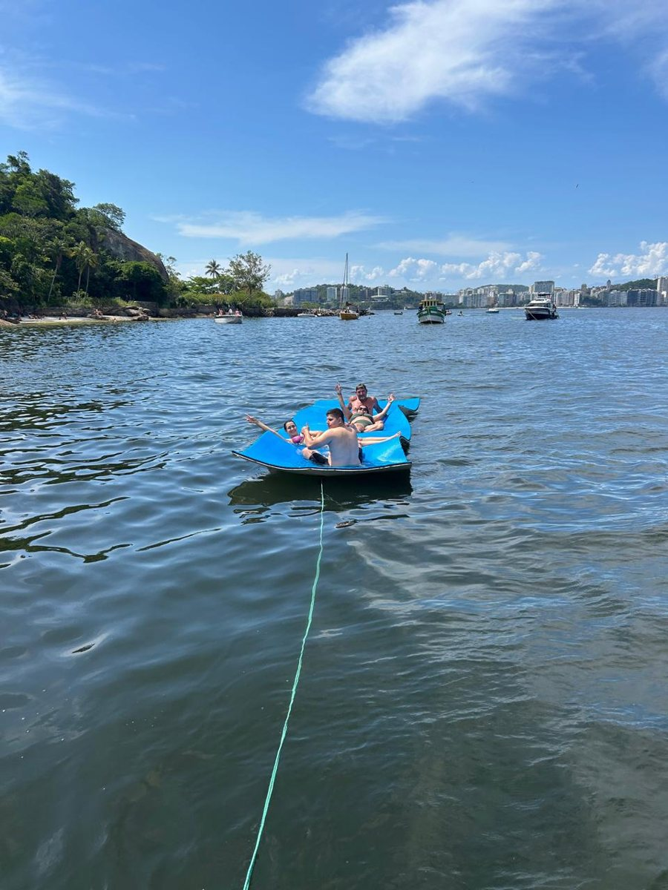

Embarque
Todo mundo a bordo em Jurujuba
O capitão e o marinheiro recebem o grupo no píer, mostram a lancha e explicam a segurança. Coolers no lugar, som ligado, e a gente solta as amarras.

Travessia
O Pão de Açúcar de frente
Cruzamos a entrada da baía até a Praia Vermelha ou a Urca. Do flybridge, o Rio inteiro aparece: Pão de Açúcar, Cristo e a orla.

Parada para banho
Âncora na Ponta do Morcego
Água calma, tapete flutuante na água e tempo livre para nadar e boiar sem pressa.

Kit churrasco incluso
Brasa acesa na popa
Com a lancha ancorada, a churrasqueira vai para fora da popa. Se quiser, peça o cardápio de drinks (cobrado à parte).

Volta
Cinco horas depois, de volta ao píer
Se o passeio for no fim do dia, a volta é com as luzes da cidade acesas e a popa iluminada de azul.